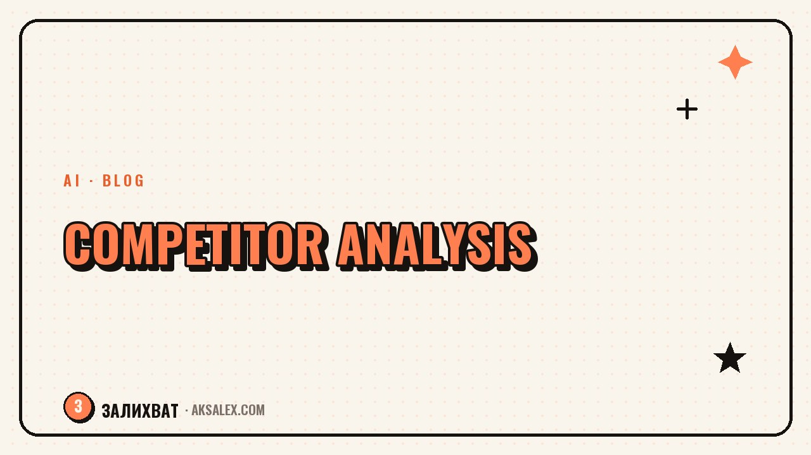

Analyzing Competitor Blogs with AI

Why analyze competitors at all
In blogging, a competitor is not an enemy but a source of data. They have already tested formats, topics and delivery on their audience, and the reader reactions show what works and what doesn't. If you run a blog in the same niche, your audience is similar, which means some of those conclusions carry over to you too.
Without structure, analysis turns into comparing yourself to someone else's polished picture and a faint feeling that "they're doing better." With clear questions it becomes a working tool: you look not at follower counts but at specific techniques you can break down and adapt.
What to look at in someone else's blog
It's convenient to break a competitor down in layers, from the overall delivery to the small details. Each layer gives you its own takeaways.
| What to look at | The question to ask yourself |
|---|---|
| Post topics | What do they write about most, which recurring themes keep coming up |
| Headlines and hooks | How do they phrase the first line, what grabs attention |
| Format of delivery | Text, carousel, video - which do they use most often |
| Audience reaction | Which topics collect the most comments and saves |
| Consistency | How often content goes out and whether there are noticeable gaps |
Gather these observations across three to five blogs in your niche, not just one - that way you see a real pattern rather than a one-off.
How to bring AI into the analysis
The AI itself won't log into someone else's account and collect the data for you - that part is on you. But it's great at structuring what you have already observed and written down.
A working sequence
- Manually write out the topics, headlines and formats of 10-15 of a competitor's posts
- Hand that list to the AI and ask it to find recurring patterns
- Ask which topics answer audience questions and which are clearly overdone by other bloggers
- Ask it to suggest how to cover a similar topic from your own angle rather than copy it
AI is good at spotting patterns in the text you give it, but it doesn't replace your own sense of what fits your particular audience.
How to turn observations into your own content plan
After the analysis, what you should be left with is not a list of someone else's posts but a list of topics and formats worth trying yourself - with your tone, your examples and your experience. Directly copying a competitor's headline or post structure is something readers pick up on fast, and it doesn't add trust.
It helps to keep a separate file or note where you log your findings after each round of analysis: the topic, why it worked for the competitor, how to adapt it to yourself. Over a few months this becomes a personal idea bank that's worth more than a one-time burst of inspiration.
What not to do when analyzing competitors
There are a few traps that are easy to fall into once you get caught up in comparing yourself to others.
- Copying headlines and post structure word for word
- Focusing only on follower count rather than engagement
- Analyzing once every six months instead of short, regular check-ins
- Getting upset over someone else's results instead of hunting for ideas you can apply
- Looking only at bloggers who are already far bigger than you
It's more useful to look at blogs roughly your size or a bit bigger - they face similar resource limits, and their findings are easier to repeat.
How to build analysis into a regular routine
You don't need a deep dive every week - that gets tedious fast and turns into a formality. A short round once a month is enough: half an hour reviewing three to five blogs, ten minutes talking to the AI about patterns, and jotting two or three ideas into your plan. That rhythm gives a steady flow of fresh topics without the burnout of constantly measuring yourself against others.
Frequently Asked Questions
Can I trust AI to fully analyze a competitor?
No, it can't go into someone else's blog and collect the data on its own. You do the observing and write out the posts, and the AI helps find patterns in the material you've gathered and suggests how to adapt the findings to your blog.
How many competitors do I need to analyze for accurate conclusions?
Three to five blogs in a similar niche and of a similar audience size is usually enough. One blog gives you random observations, while several reveal a pattern you can actually rely on.
How do I avoid sliding into copying someone else's content?
Take the principle from a competitor, not the finished wording: the topic, the format or the angle. Then retell it in your own words, drawing on your own experience and examples - the result is similar in spirit but your own article or post.
Is it worth analyzing bloggers much bigger than me?
You can, but not as your main source of ideas. Large bloggers have different resources and reach, and not all of their techniques work on a small audience. It's more useful to focus on blogs of a similar size.
How often should I return to competitor analysis?
Once a month is enough for most blogs. More frequent analysis eats up time without much benefit, while doing it more rarely risks missing shifts in the niche's trends.
Enjoyed this one? Here's what to read next. AI to help with blog SEO: keywords, headlines, structure, and text checks. We break it down step by step.
Read the article →not by hand